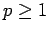
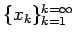
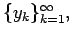
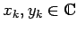

Minkowskische Ungleichung
- 1. Minkowskische Ungleichung für Reihen:
- Wenn  ist und  sowie  mit  zwei Zahlenfolgen sind, dann gilt:
- 2. Minkowskische Ungleichung für Integrale:
- Wenn f(x) und g(x) zwei meßbare Funktionen auf dem Maßraum
 sind, dann gilt:
sind, dann gilt: